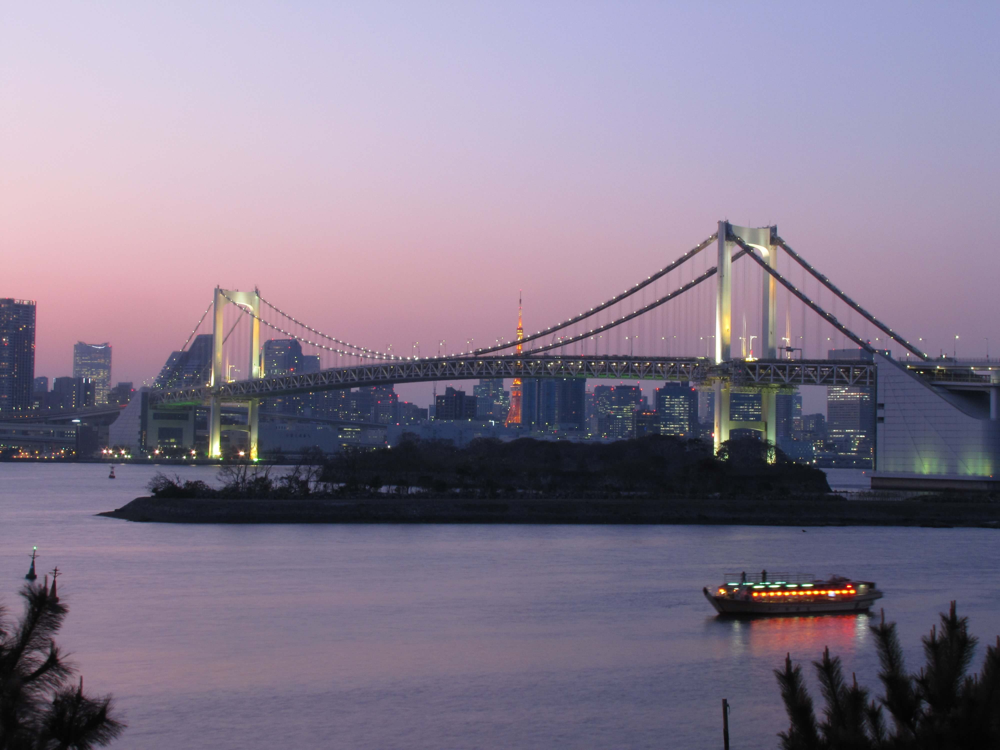
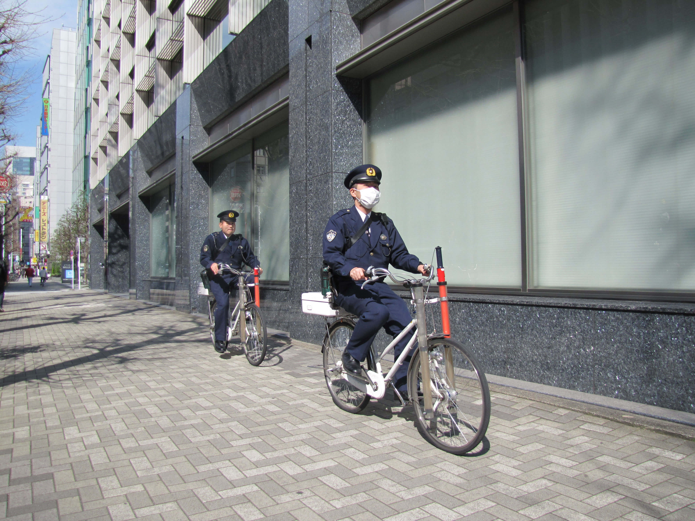
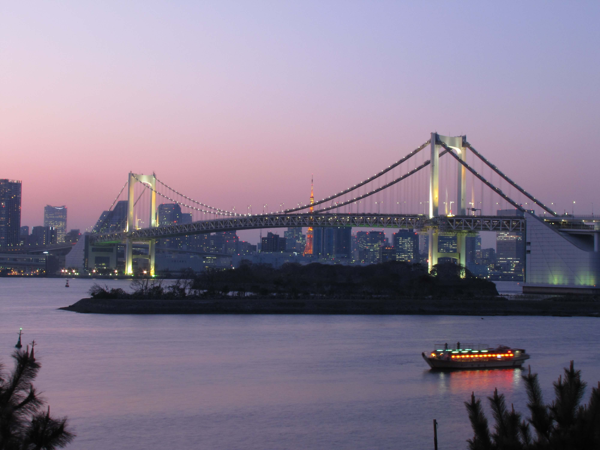
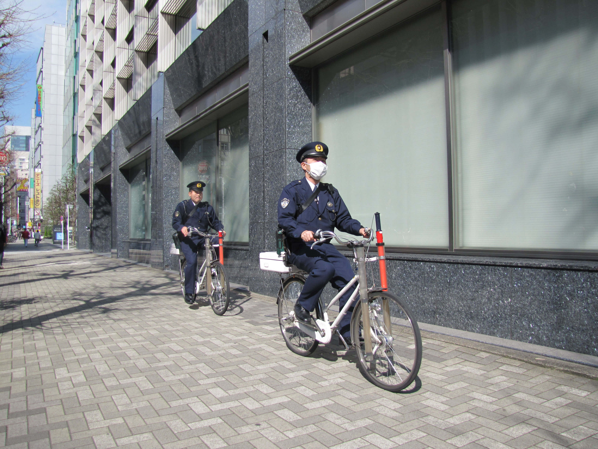

Photos from my Japan Trip
These are some of my photos from my trip in Japan. I was in Japan from March through April of 2015. While most of these photos were taken in Tokyo, there were some that were taken in Osaka, Kobe, as well as Kyoto. You can click on each image to see a larger version of the photo.

 


